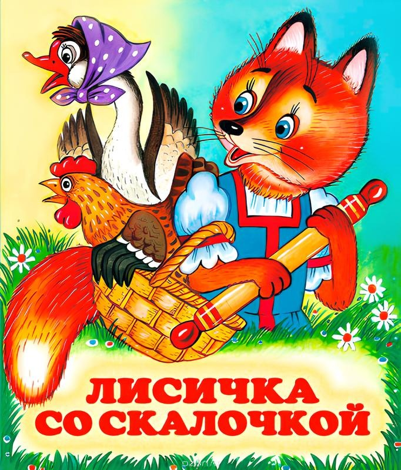
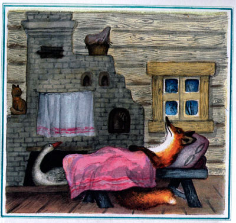

Лисичка со скалочкой

Шла лисичка по дорожке, нашла скалочку. Подняла и пошла дальше.

Пришла в деревню и стучится в избу:
— Стук-стук-стук!
— Кто там?
— Я, лисичка-сестричка! Пустите переночевать!
— У нас и без тебя тесно.
— Да я не потесню вас: сама лягу на лавочку, хвостик под лавочку, скалочку под печку.
Её пустили.

Вот она легла сама на лавочку, хвостик под лавочку, скалочку под печку.
Рано утром лисичка встала, сожгла свою скалочку, а потом и спрашивает:
— Где же моя скалочка? Давайте мне за неё курочку!
Мужик — делать нечего! — отдал ей за скалочку курочку.

Взяла лисичка курочку, идёт да поёт:
— Шла лисичка по дорожке,
Нашла скалочку,
За скалочку взяла курочку!
Пришла она в другую деревню:
— Стук-стук-стук!
— Кто там?

— Я, лисичка-сестричка! Пустите переночевать!
— У нас и без тебя тесно.
— Да я не потесню вас: сама лягу на лавочку, хвостик под лавочку, курочку под печку.
Её пустили.
Лисичка легла сама на лавочку, хвостик под лавочку, а курочку под печку.
Рано утром лисичка потихоньку встала, схватила курочку, съела, а после и говорит:
— Где же моя курочка? Давайте мне за неё гусочку!
Ничего не поделаешь, пришлось хозяину отдавать ей за курочку гусочку.

Взяла лисичка гусочку, идёт да поёт:

— Шла лисичка по дорожке,
Нашла скалочку,
За скалочку взяла курочку,
За курочку взяла гусочку!
Пришла она под вечер в третью деревню:

— Стук-стук-стук!
— Кто там?
— Я, лисичка-сестричка! Пустите переночевать!
— Да у нас и без тебя тесно.
— А я не потесню вас: сама лягу на лавочку, хвостик под лавочку, гусочку под печку.
Её пустили.
Вот она легла сама на лавочку, хвостик под лавочку, гусочку под печку.

Утром, чуть свет, лисичка вскочила, схватила гусочку, съела да и говорит:
— А где же моя гусочка? Давайте мне за неё девочку!
А мужику девочку жалко отдавать. Посадил он в мешок большую собаку и отдал лисе:
— Бери, лиса, девочку!
Вот лиса взяла мешок, вышла на дорогу и говорит:
— Девочка, пой песни!
А собака в мешке как зарычит!

Лиса испугалась, бросила мешок — да бежать…
Тут собака выскочила из мешка — да за ней!

Лиса от собаки бежала-бежала да под пенёк в нору юркнула. Сидит там и говорит:
— Ушки мои, ушки! Что вы делали?
— Мы всё слушали.
— А вы, ножки, что делали?
— Мы всё бежали.
— А вы, глазки?
— Мы всё глядели.
— А ты, хвост?
— А я всё тебе мешал бежать.
— А, ты всё мешал! Ну постой же, я тебе задам! — И высунула хвост из норы. — Ешь его, собака!
Тут собака ухватилась за лисий хвост, вытащила лисицу из норы и давай её трепать!